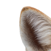

Задание 5. Drag & Drop
В задании реализована интерактивная сборка фигуры из отдельных элементов с поворотом и эффектом прилипания.
Описание задания
Элементы фигуры изначально располагаются хаотично и могут перемещаться по рабочей области. Для корректной сборки необходимо правильно совместить положение и ориентацию.
Как реализовано
Использованы обработчики событий мыши, расчёт относительных координат, проверка поворота элементов и механизм «прилипания» с допустимой погрешностью.
Собери фигуру
